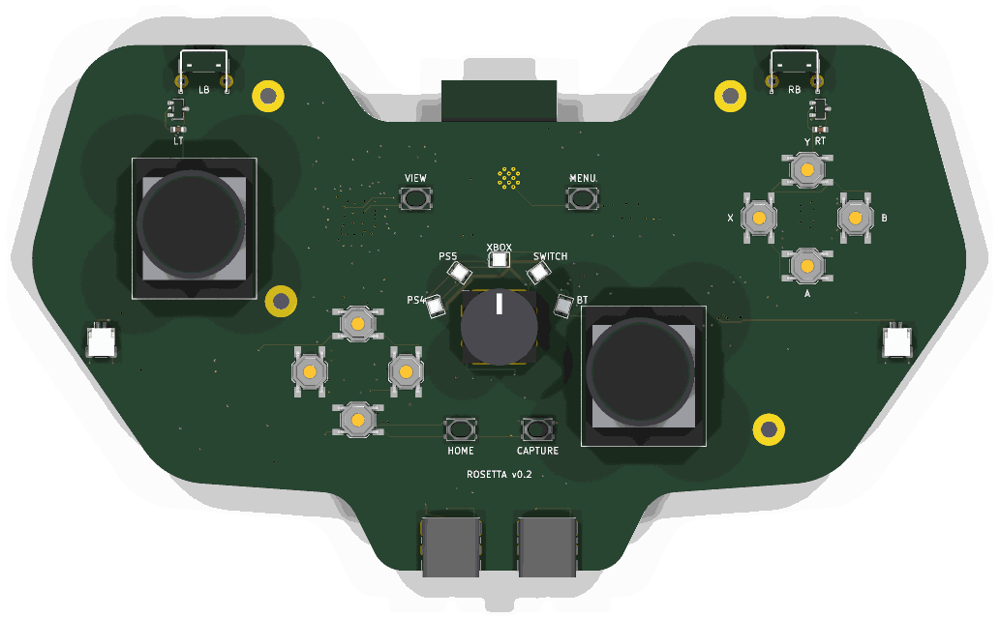
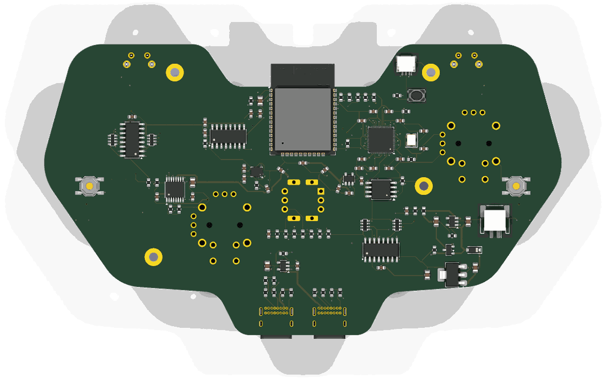

Examples · examples/universal-controller/v0.2
Rosetta
A universal game controller, as a controller's own main board
One controller for a PS4, a PS5, an Xbox, a Switch, or anything over Bluetooth. A 5-position knob where an Xbox 360 pad has its guide button picks the console. The controller drops off the bus while the knob turns and comes back as the chosen console's own controller.
- v0.2
- 145.5 × 82 mm
- 6 layers
- 135 parts
- 2,141 track segments
- 220 vias
Drag to turn the board. KiCad's render of it, 36 views, 10 degrees apart.


The hard parts
What is hard about it, and where each part lives
Thumbsticks on the board, with no drift
SL and SR take ALPS RKJXV122400R sticks, the stick of PlayStation and Xbox pads, or a Hall-effect drop-in in the same holes. KiCad has no footprint for it: footprints/make_footprints.py writes one from the catalog's mounting-hole drawing (6 axis pins at 2.5 mm, 4 frame legs, 2 locating holes, 4 push-switch pins), and the drawing's "prohibited wiring area" under each stick is a keep-out on the front. Each axis's 3 pins are the rails and the output: a pot is a divider, a Hall stick drives its output.
Triggers that read a magnet
U15 and U16 (DRV5055A1, ratiometric linear Hall sensors) sit on the shoulder horns under each trigger's magnet. Their output is a fraction of +3V3, read by the ADC against +3V3.
1 knob, 5 consoles
SW1, an NKK NR01 1-pole 5-position rotary switch, taps a ladder of 6 x 1k (R40-R45). The ADC reads 1 number: position k at (6 - k)/6 of full scale; between detents R46 (100k) pulls the wiper to ~0. 6 decks hold every position inside its window at every corner (sim/).
A PS4, a PS5 and an Xbox talk only to a licensed controller
J2 is a USB host port for a licensed donor. The RP2040 runs a second USB port in software (PIO-USB, GPIO16 and GPIO17) and relays the console's challenge to the donor. U13 switches the donor's 5 V.
Bluetooth Classic and BLE
U3, an ESP32-WROOM-32E on the RP2040's UART, on the back. Its antenna hangs past the dip between the shoulder horns, where the footprint's keep-out lies in the air. The RP2040 holds its EN and IO0, so 1 USB cable updates both chips.
Rumble
2 motors on J7 and J8 at the grips, as the 360's are, each on 1 bridge of U6 (DRV8833), whose current is limited to 400 mA by R50 and R51.
Gyro aim
U5, an LSM6DSL 6-axis IMU.
A light that names the console
5 RGB LEDs (D2-D6) round the knob, fed from VSYS, their data lifted to that rail by U14 (74AHCT1G125).
16 buttons and 2 paddles
2 74HC165 shift registers (U7, U8) on 3 pins; the bumpers SW10 and SW11 are right-angle switches whose plungers stand out of the horns' top edge.
Explore the board
Every track and part of the routed board, drawn from its file
The board as examples/universal-controller/v0.2/rosetta.kicad_pcb holds it: six copper layers, 2,141 track segments, 220 vias and 102 nets. Point at a pad to see its part, and click a track, a via or a pad to follow its connection across the board.
Drag to move. Pinch, or hold Ctrl and scroll, to zoom.
How it was built
Every step of the design, with what it changed
Each step as v0.1/TIMELINE.md records it, oldest first.
1 controller, 5 consoles, a knob that picks
The owner found the site's examples poor and asked for a prototype in the manner of Agentcast and Last Hit: a universal controller with a switch that picks a PS4, a PS5, an Xbox, a Switch or Bluetooth, with ideas that are hard to do.
The board is a Python file
design.pynames 140 parts and places them in a controller's outline, on 4 layers. The knob is 1 analog reading: SW1 taps a ladder of 6 x 1k, and position k reads (6 - k)/6 of full scale. A USB host port relays a console's signature to a licensed donor through a second USB port the RP2040 runs in software.Evidence:
design.py; the README's table "What is hard about it".The first deck found a sixth position
The knob's first deck held a 1 M pull-down on the wiper. With the ADC's input leakage it read 1 V between detents: a position the decoder would act on. The ladder is 1k and the pull-down 100k now, and 6 decks hold each position inside its window at every corner.
Evidence:
sim/mode_between.cir,sim/mode_p1.cirtosim/mode_p5.cir,sim/corners.json.An antenna turned into the board
The ESP32 module went on the back face at 180 degrees, to point its antenna out over the notch between the grips. On the back face the generator mirrors the footprint first, so 180 degrees pointed the antenna into the board. The DRC listed 41 courtyard overlaps against the antenna's keep-out and 8 through pads inside it. At 0 degrees the antenna hangs out as intended.
Evidence: mistake M126; process P19.
The Docker image could not route
The machine had no KiCad, so the workcenter ran in the repository's Docker image. The image could not route: Debian's headless Java has no X11 library, and FreeRouting stops without it.
install.shnow adds the full Java runtime where the library is missing.Evidence:
install.sh; the changelog's Fixed entry.60 passes and no session
The first route ran FreeRouting with 60 passes, the number the skill gives for small boards. It ran for the workcenter's 15-minute limit and was killed, and a killed run writes no session. 12 passes finished in 13 minutes; 20 passes in 12 minutes from a better placement.
Evidence: mistake M128; process P4.
The wired sheet's ERC found 3 faults
A label-only schematic passed the checks that ran, and the DRC does not see a net with 1 pin. The first wired sheet's ERC did: each stick's click was on a net named
L3orR3while the shift registers readBTN_L3andBTN_R3, the DRV8833's sense pins were tied straight to a rail, and so were the IMU's strap pins. The fixes areBTN_L3andBTN_R3, R50 and R51 (0.5 ohm, a 400 mA limit on each trigger motor), and R52. The board was routed again.Evidence: mistake M127; process P24.
Lanes for the RP2040
The RP2040's pins had no lanes until its capacitors moved to its corners and its vias shrank to 0.45 mm. From there FreeRouting closed every connection in 1 run of 4. The IMU's supply pins stayed apart in 3 runs; that link is drawn by hand.
Evidence:
rosetta.kicad_pcb.GREEN with 5 warnings
The 5 warnings are the silkscreen outlines of the 2 USB-C receptacles and the ESP32 module, which hang over the board's edge on purpose. The firmware's host tests pass:
make -C firmware test.$ workcenter gates examples/universal-controller/v0.1 PASS erc 0 errors, 0 warnings [0.64s] PASS drc 0 errors, 5 warnings (0 unconnected, 0 parity) [1.37s] - warning: silk_edge_clearance: Silkscreen clipped by board edge - warning: silk_edge_clearance: Silkscreen clipped by board edge - warning: silk_edge_clearance: Silkscreen clipped by board edge - warning: silk_edge_clearance: Silkscreen clipped by board edge - warning: silk_edge_clearance: Silkscreen clipped by board edge PASS sim 6 decks, 370 corner runs, 0 failures [1.32s] PASS export 4/4 outputs, 24 gerber files [2.07s] GREEN with 5 warnings: rosetta report examples/universal-controller/v0.1/build/gates.json
What is open
What is still to be done on this board
- The stick's switch pins. The drawing names the push switch's 4 holes a to d but not which pairs are joined inside. The board uses a for the click and d for GND, which is right if a-b and c-d, or a-c and b-d, are the joined pairs, and wrong if a-d are. The formal specification ALPS sends on request settles it.
- The triggers' magnets and pivots are not designed: the shell holds them. Each DRV5055 needs its magnet's field across the trigger's travel inside its 21 mT range (A1).
- Everything v0.1 lists as open: the firmware beyond the knob's decoder, the auth relay against a real console, the regulator's dropout at the end of the cell.